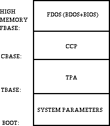

Table of Contents
5.1 Introduction
5.2 Operating System Call Conventions
5.3 A Sample File-to-File Copy Program
5.4 A Sample File Dump Utility
5.5 A Sample Random Access Program
5.6 System Function Summary
Tables
5-1 CP/M Filetypes
5-2 File Control Block Fields
5-3 Edit Control Characters
Figures
5-1 CP/M Memory Organization
5-2 File Control Block Format
This chapter describes CP/M (release 2) system organization
including the structure of memory and system entry points. This
section provides the information you need to write programs that
operate under CP/M and that use the peripheral and disk I/O
facilities of the system.
CP/M is logically divided into four parts, called the Basic
Input/Output System (BIOS), the Basic Disk Operating System
(BDOS), the Console Command Processor (CCP), and the Transient
Program Area (TPA). The BIOS is a hardware-dependent module that
defines the exact low level interface with a particular computer
system that is necessary for peripheral device I/O. Although a
standard BIOS is supplied by Digital Research, explicit
instructions are provided for field reconfiguration of the BIOS
to match nearly any hardware environment, see
Section 6.
The BIOS and BDOS are logically combined into a single module
with a common entry point and referred to as the FDOS. The CCP is
a distinct program that uses the FDOS to provide a human-oriented
interface with the information that is cataloged on the back-up
storage device. The TPA is an area of memory, not used by the
FDOS and CCP, where various nonresident operating system commands
and user programs are executed. The lower portion of memory is
reserved for system information and is detailed in later
sections. Memory organization of the CP/M system is shown in
Figure 5-1.
 The exact memory addresses corresponding to BOOT, TBASE, CBASE,
and FBASE vary from version to version and are described fully in
Section 6.
All standard CP/M versions assume BOOT=0000H, which is
the base of random access memory. The machine code found at
location BOOT performs a system warm start, which loads and
initializes the programs and variables necessary to return
control to the CCP. Thus, transient programs need only jump to
location BOOT to return control to CP/M at the command level.
further, the standard versions assume TBASE=BOOT+0100H, which is
normally location 0100H. The principal entry point to the FDOS is
at location BOOT+0005H (normally 0005H) where a jump to BASE is
found. The address field at BOOT+0006H (normally 006H) contains
the value of FBASE and can be used to determine the size of
available memory, assuming that the CCP is being overlaid by a
transient program.
Transient programs are loaded into the TPA and executed as
follows. The operator communicates with the CCP by typing command
lines following each prompt. Each command line takes one of the
following forms:
where command is either a built-in function, such as DIR or TYPE,
or the name of a transient command or program. If the command is
a built-in function of CP/M, it is executed immediately.
Otherwise, the CCP searches the currently addressed disk for a
file by the name
If the file is found, it is assumed to be a memory image of a
program that executes in the TPA and thus implicity originates at
TBASE in memory. The CCP loads the COM file from the disk into
memory starting at TBASE and can extend up to CBASE.
If the command is followed by one or two file specifications, the
CCP prepares one or two File Control Block (FCB) names in the
system parameter area. These optional FCBs are in the form
necessary to access files through the FDOS and are described in
Section 5.2.
The transient program receives control from the CCP and begins
execution, using the I/O facilities of the FDOS. The transient
program is called from the CCP. Thus, it can simply return to the
CCP upon completion of its processing, or can Jump to BOOT to
pass control back to CP/M. In the first case, the transient
program must not use memory above CBASE, while in the latter
case, memory up through FBASE-1 can be used.
The transient program can use the CP/M I/O facilities to
communicate with the operator's console and peripheral devices,
including the disk subsystem. The I/O system is accessed by
passing a function number and an information address to CP/M
through the FDOS entry point at BOOT+0005H. In the case of a disk
read, for example, the transient program sends the number
corresponding to a disk read, along with the address of an FCB to
the CP/M FDOS. The FDOS, in turn, performs the operation and
returns with either a disk read completion indication or an error
number indicating that the disk read was unsuccessful.
This section provides detailed information for performing direct
operating system calls from user programs. Many of the functions
listed below, however, are accessed more simply through the I/O
macro library provided with the MAC macro assembler and listed in
the Digital Research manual entitled Programmer's Utilities
Guide for the CP/M Family of Operating Systems.
CP/M facilities that are available for access by transient
programs fall into two general categories: simple device I/O and
disk file I/O. The simple device operations are
The following FDOS operations perform disk I/O:
As mentioned above, access to the FDOS functions is accomplished
by passing a function number and information address through the
primary point at location BOOT+0005H. In general, the function
number is passed in register C with the information address in
the double byte pair DE. Single byte values are returned in
register A, with double byte values returned in HL, a zero value
is returned when the function number is out of range. For reasons
of compatibility, register A = L and register B = H upon return
in all cases. Note that the register passing conventions of CP/M
agree with those of the Intel PL/M systems programming language.
CP/M functions and their numbers are listed below.
Functions 28 and
32 should be avoided in application programs to
maintain upward compatibility with CP/M.
Upon entry to a transient program, the CCP leaves the stack
pointer set to an eight-level stack area with the CCP return
address pushed onto the stack, leaving seven levels before
overflow occurs. Although this stack is usually not used by a
transient program (most transients return to the CCP through a
jump to location 0000H) it is large enough to make CP/M system
calls because the FDOS switches to a local stack at system entry.
For example, the assembly-language program segment below reads
characters continuously until an asterisk is encountered, at
which time control returns to the CCP, assuming a standard CP/M
system with BOOT = 0000H.
CP/M implements a named file structure on each disk, providing a
logical organization that allows any particular file to contain
any number of records from completely emptv to the full capacity
of the drive. Each drive is logically distinct with a disk
directory and file data area. The disk filenames are in three
parts: the drive select code, the filename (consisting of one to
eight nonblank characters), and the filetype (consisting of zero
to three nonblank characters). The filetype names the generic
category of a particular file, while the filename distinguishes
individual files in each category. The filetypes listed in
Table 5-1
name a few generic categories that have been established,
although they are somewhat arbitrary.
Source files are treated as a sequence of ASCII characters, where
each line of the source file is followed by a carriage return,
and line-feed sequence (0DH followed by 0AH). Thus, one 128-byte
CP/M record can contain several lines of source text. The end of
an ASCII file is denoted by a CTRL-Z character (1AH) or a real
end-of-file returned by the CP/M read operation. CTRL-Z
characters embedded within machine code files (for example, COM
files) are ignored and the end-of-file condition returned by CP/M
is used to terminate read operations.
Files in CP/M can be thought of as a sequence of up to 65536
records of 128 bytes each, numbered from 0 through 65535, thus
allowing a maximum of 8 megabytes per file. Note, however, that
although the records may be considered logically contiguous, they
may not be physically contiguous in the disk data area.
Internally, all files are divided into 16K byte segments called
logical extents, so that counters are easily maintained as 8-bit
values. The division into extents is discussed in the paragraphs
that follow: however, they are not particularly significant for
the programmer, because each extent is automatically accessed in
both sequential and random access modes.
In the file operations starting with
Function 15, DE usually
addresses a FCB. Transient programs often use the default FCB
area reserved by CP/M at location BOOT+005CH (normally 005CH) for
simple file operations. The basic unit of file information is a
128-byte record used for all file operations. Thus, a default
location for disk I/O is provided by CP/M at location BOOT+0080H
(normally 0080H) which is the initial default DMA address. See
Function 26.
All directory operations take place in a reserved area that does
not affect write buffers as was the case in release 1, with the
exception of
Search First and
Search Next, where compatibility is
required.
The FCB data area consists of a sequence of 33 bytes for
sequential access and a series of 36 bytes in the case when the
file is accessed randomly. The default FCB, normally located at
005CH, can be used for random access files, because the three
bytes starting at BOOT+007DH are available for this purpose.
Figure 5-2
shows the FCB format with the following fields.
The following table lists and describes each of the fields in the
File Control Block figure.
Each file being accessed through CP/M must have a corresponding
FCB, which provides the name and allocation information for all
subsequent file operations. When accessing files, it is the
programmer's responsibility to fill the lower 16 bytes of the FCB
and initialize the cr field. Normally, bytes 1 through 11 are
set to the ASCII character values for the filename and filetype,
while all other fields are zero.
FCBs are stored in a directory area of the disk, and are brought
into central memory before the programmer proceeds with file
operations (see the
OPEN and
MAKE functions). The memory copy of
the FCB is updated as file operations take place and later
recorded permanently on disk at the termination of the file
operation, (see the
CLOSE command).
The CCP constructs the first 16 bytes of two optional FCBs for a
transient by scanning the remainder of the line following the
transient name, denoted by file1 and file2 in the prototype
command line described above, with unspecified fields set to
ASCII blanks. The first FCB is constructed at location BOOT+005CH
and can be used as is for subsequent file operations. The second
FCB occupies the d0 ... dn portion of the first FCB and must be
moved to another area of memory before use. If, for example, the
following command line is typed:
the file PROGNAME.COM is loaded into the TPA, and the default FCB
at BOOT+005CH is initialized to drive code 2, filename X, and
filetype ZOT. The second drive code takes the default value 0,
which is placed at BOOT+006CH, with the filename Y placed into
location BOOT+006DH and filetype ZAP located 8 bytes later at
BOOT+0075H. All remaining fields through cr are set to zero. Note
again that it is the programmer's responsibility to move this
second filename and filetype to another area, usually a separate
file control block, before opening the file that begins at
BOOT+005CH, because the open operation overwrites the second name
and type.
If no filenames are specified in the original command, the fields
beginning at BOOT+005DH and BOOT+006DH contain blanks. In all
cases, the CCP translates lower-case alphabetics to upper-case to
be consistent with the CP/M file naming conventions.
As an added convenience, the default buffer area at location
BOOT+0080H is initialized to the command line tail typed by the
operator following the program name. The first position contains
the number of characters, with the characters themselves
following the character count. Given the above command line, the
area beginning at BOOT+0080H is initialized as follows:
where the characters are translated to upper-case ASCII with
uninitialized memory following the last valid character. Again,
it is the responsibility of the programmer to extract the
information from this buffer before any file operations are
performed, unless the default DMA address is explicitly changed.
Individual functions are described in detail in the pages that
follow.
5.1 Introduction
command
command file1
command file1 file2
command.COM
5.2 Operating System Call Conventions
0 System Reset 19 Delete File
1 Console Input 20 Read Sequential
2 Console Output 21 Write Sequential
3 Reader Input 22 Make File
4 Punch Output 23 Rename File
5 List Output 24 Return Login Vector
6 Direct Console I/O 25 Return Current Disk
7 Get I/O Byte 26 Set DMA Address
8 Set I/O Byte 27 Get Addr(Alloc)
9 Print String 28 Write Protect Disk
10 Read Console Buffer 29 Get R/O Vector
11 Get Console Status 30 Set File Attributes
12 Return Version Number 31 Get Addr(Disk Parms)
13 Reset Disk System 32 Set/Get User Code
14 Select Disk 33 Read Random
15 Open File 34 Write Random
16 Close File 35 Compute File Size
17 Search for First 36 Set Random Record
18 Search for Next 37 Reset Drive
40 Write Random with Zero Fill
BDOS EQU 0005H ;STANDARD CP/M ENTRY
CONIN EQU 1 ;CONSOLE INPUT FUNCTION
;
ORG 0100H ;BASE OF TPA
NEXTC: MVI C,CONIN ;READ NEXT CHARACTER
CALL BDOS ;RETURN CHARACTER IN <A>
CPI '*' ;END OF PROCESSING?
JNZ NEXTC ;LOOP IF NOT
RET ;RETURN TO CCP
END
Filetype Meaning
ASM Assembler Source
PRN Printer Listing
HEX Hex Machine Code
BAS Basic Source File
INT Intermediate Code
COM Command File
PLI PL/I Source File
REL Relocatable Module
TEX TEX Formatter Source
BAK ED Source Backup
SYM SID Symbol File
$$$ Temporary File
Field Definition
dr drive code (0-16)
0 = use default drive for file
1 = auto disk select drive A,
2 = auto disk select drive B,
...
16 = auto disk select drive P.
f1...f8 contain the filename in ASCII upper-case,
with high bit = 0
t1,t2,t3 contain the filetype in ASCII upper-case,
with high bit = 0. t1', t2', and t3' denote
the bit of these positions,
t1' = 1 = Read-Only file,
t2' = 1 = SYS file, no DIR list
ex contains the current extent number, normally
set to 00 by the user, but in range 0-31
during file I/O
s1 reserved for internal system use
s2 reserved for internal system use, set to zero
on call to
OPEN, MAKE,
SEARCH
rc record count for extent ex; takes on values
from 0-127
d0...dn filled in by CP/M; reserved for system use
cr current record to read or write in a
sequential file operation; normally set to
zero by user
r0,r1,r2 optional random record number in the range 0-
65535, with overflow to r2, r0, r1 constitute
a 16-bit value with low byte r0, and high
byte r1
PROGNAME B:X.ZOT Y.ZAP
BOOT+0080H:
+00 +01 +02 +03 +04 +05 +06 +07 +08 +09
+0A +0B +0C +0D +0E
0EH ' ' 'B' ':' 'X' '.' 'Z' 'O' 'T'
' ' 'Y' '.' 'Z' 'A' 'P'
| Function 0: System Reset | ||
| Register | Value | |
|---|---|---|
| Entry | C | 00H |
| Return | (none) | |
The System Reset function returns control to the CP/M operating system at the CCP level. The CCP reinitializes the disk subsystem by selecting and logging-in disk drive A. This function has exactly the same effect as a jump to location BOOT.
| Function 1: Console Input | ||
| Register | Value | |
|---|---|---|
| Entry | C | 01H |
| Return | A | ASCII Character |
The Console Input function reads the next console character to register A. Graphic characters, along with carriage return, line- feed, and back space (CTRL-H) are echoed to the console. Tab characters, CTRL-I, move the cursor to the next tab stop. A check is made for start/stop scroll, CTRL-S, and start/stop printer echo, CTRL-P. The FDOS does not return to the calling program until a character has been typed, thus suspending execution if a character is not ready.
| Function 2: Console Output | ||
| Register | Value | |
|---|---|---|
| Entry | C | 01H |
| E | ASCII Character | |
| Return | (none) | |
The ASCII character from register E is sent to the console device. As in Function 1, tabs are expanded and checks are made for start/stop scroll and printer echo.
| Function 3: Reader Input | ||
| Register | Value | |
|---|---|---|
| Entry | C | 03H |
| Return | A | ASCII Character |
The Reader Input function reads the next character from the logical reader into register A. See the IOBYTE definition in Section 6. Control does not return until the character has been read.
| Function 4: Punch Output | ||
| Register | Value | |
|---|---|---|
| Entry | C | 04H |
| E | ASCII Character | |
| Return | (none) | |
The Punch Output function sends the character from register E to the logical punch device.
| Function 5: List Output | ||
| Register | Value | |
|---|---|---|
| Entry | C | 05H |
| E | ASCII Character | |
| Return | (none) | |
The List Output function sends the ASCII character in register E to the logical listing device.
| Function 6: Direct Console I/O | ||
| Register | Value | |
|---|---|---|
| Entry | C | 06H |
| E | 0FFH (input) or char (output) | |
| Return | A | char or status |
Direct Console I/O is supported under CP/M for those specialized applications where basic console input and output are required. Use of this function should, in general, be avoided since it bypasses all of the CP/M normal control character functions (for example, CTRL-S and CTRL-P). Programs that perform direct I/O through the BIOS under previous releases of CP/M, however, should be changed to use direct I/O under BDOS so that they can be fully supported under future releases of MP/M and CP/M.
Upon entry to Function 6, register E either contains hexadecimal FF, denoting a console input request, or an ASCII character. If the input value is FF, Function 6 returns A = 00 if no character is ready, otherwise A contains the next console input character.
If the input value in E is not FF, Function 6 assumes that E contains a valid ASCII character that is sent to the console.
Function 6 must not be used in conjunction with other console I/O functions.
| Function 7: Get I/O Byte | ||
| Register | Value | |
|---|---|---|
| Entry | C | 07H |
| Return | A | I/O Byte Value |
The Get I/O Byte function returns the current value of IOBYTE in register A. See Section 6 for IOBYTE definition.
| Function 8: Set I/O Byte | ||
| Register | Value | |
|---|---|---|
| Entry | C | 08H |
| E | I/O Byte Value | |
| Return | (none) | |
The SET I/O Byte function changes the IOBYTE value to that given in register E.
| Function 9: Print String | ||
| Register | Value | |
|---|---|---|
| Entry | C | 09H |
| DE | String Address | |
| Return | (none) | |
The Print String function sends the character string stored in memory at the location given by DE to the console device, until a $ is encountered in the string. Tabs are expanded as in Function 2, and checks are made for start/stop scroll and printer echo.
| Function 10: Read Console Buffer | ||
| Register | Value | |
|---|---|---|
| Entry | C | 0AH |
| DE | Buffer Address | |
| Return | Console Characters in Buffer | |
The Read Buffer function reads a line of edited console input into a buffer addressed by registers DE. Console input is terminated when either input buffer overflows or a carriage return or line-feed is typed. The Read Buffer takes the form:
| DE: | +0 | +1 | +2 | +3 | +4 | +5 | +6 | +7 | +8 | ... | +n |
| mx | nc | cl | c2 | c3 | c4 | c5 | c6 | c7 | ... | ?? |
where mx is the maximum number of characters that the buffer will hold, 1 to 255, and nc is the number of characters read (set by FDOS upon return) followed by the characters read from the console. If nc < mx, then uninitialized positions follow the last character, denoted by ?? in the above figure. A number of control functions, summarized in Table 5-3, are recognized during line editing.
The user should also note that certain functions that return the carriage to the leftmost position (for example, CTRL-X) do so only to the column position where the prompt ended. In earlier releases, the carriage returned to the extreme left margin. This convention makes operator data input and line correction more legible.
| Function 11: Get Console Status | ||
| Register | Value | |
|---|---|---|
| Entry | C | 0BH |
| Return | A | Console Status |
The Console Status function checks to see if a character has been typed at the console. If a character is ready, the value 0FFH is returned in register A. Otherwise a 00H value is returned.
| Function 12: Return Version Number | ||
| Register | Value | |
|---|---|---|
| Entry | C | 0CH |
| Return | HL | Version Number |
Function 12 provides information that allows version independent programming. A two-byte value is returned, with H = 00 designating the CP/M release (H = 01 for MP/M) and L = 00 for all releases previous to 2.0. CP/M 2.0 returns a hexadecimal 20 in register L, with subsequent version 2 releases in the hexadecimal range 21, 22, through 2F. Using Function 12, for example, the user can write application programs that provide both sequential and random access functions.
| Function 13: Reset Disk System | ||
| Register | Value | |
|---|---|---|
| Entry | C | 0DH |
| Return | (none) | |
The Reset Disk function is used to programmatically restore the file system to a reset state where all disks are set to Read-Write. See functions 28 and 29, only disk drive A is selected, and the default DMA address is reset to BOOT+0080H. This function can be used, for example, by an application program that requires a disk change without a system reboot.
| Function 14: Select Disk | ||
| Register | Value | |
|---|---|---|
| Entry | C | 0EH |
| E | Selected Disk | |
| Return | (none) | |
The Select Disk function designates the disk drive named in register E as the default disk for subsequent file operations, with E = 0 for drive A, 1 for drive B, and so on through 15, corresponding to drive P in a full 16 drive system. The drive is placed in an on-line status, which activates its directory until the next cold start, warm start, or disk system reset operation. If the disk medium is changed while it is on-line, the drive automatically goes to a Read-Only status in a standard CP/M environment, see Function 28. FCBs that specify drive code zero (dr = 00H) automatically reference the currently selected default drive. Drive code values between 1 and 16 ignore the selected default drive and directly reference drives A through P.
| Function 15: Open File | ||
| Register | Value | |
|---|---|---|
| Entry | C | 0FH |
| DE | FCB Address | |
| Return | A | Directory Code |
The Open File operation is used to activate a file that currently exists in the disk directory for the currently active user number. The FDOS scans the referenced disk directory for a match in positions 1 through 14 of the FCB referenced by DE (byte s1 is automatically zeroed) where an ASCII question mark (3FH) matches any directory character in any of these positions. Normally, no question marks are included, and bytes ex and s2 of the FCB are zero.
If a directory element is matched, the relevant directory information is copied into bytes d0 through dn of FCB, thus allowing access to the files through subsequent read and write operations. The user should note that an existing file must not be accessed until a successful open operation is completed. Upon return, the open function returns a directory code with the value 0 through 3 if the open was successful or 0FFH (255 decimal) if the file cannot be found. If question marks occur in the FCB, the first matching FCB is activated. Note that the current record, (cr) must be zeroed by the program if the file is to be accessed sequentially from the first record.
| Function 16: Close File | ||
| Register | Value | |
|---|---|---|
| Entry | C | 10H |
| DE | FCB Address | |
| Return | A | Directory Code |
The Close File function performs the inverse of the Open File function. Given that the FCB addressed by DE has been previously activated through an open or make function, the close function permanently records the new FCB in the reference disk directory (see functions 15 and 22). The FCB matching process for the close is identical to the open function. The directory code returned for a successful close operation is 0, 1, 2, or 3, while a 0FFH (255 decimal) is returned if the filename cannot be found in the directory. A file need not be closed if only read operations have taken place. If write operations have occurred, the close operation is necessary to record the new directory information permanently.
| Function 17: Search for First | ||
| Register | Value | |
|---|---|---|
| Entry | C | 11H |
| DE | FCB Address | |
| Return | A | Directory Code |
Search First scans the directory for a match with the file given by the FCB addressed by DE. The value 255 (hexadecimal FF) is returned if the file is not found; otherwise, 0, 1, 2, or 3 is returned indicating the file is present. When the file is found, the current DMA address is filled with the record containing the directory entry, and the relative starting position is A * 32 (that is, rotate the A register left 5 bits, or ADD A five times). Although not normally required for application programs, the directory information can be extracted from the buffer at this position.
An ASCII question mark (63 decimal, 3F hexadecimal) in any position from f1 through ex matches the corresponding field of any directory entry on the default or auto-selected disk drive. If the dr field contains an ASCII question mark, the auto disk select function is disabled and the default disk is searched, with the search function returning any matched entry, allocated or free, belonging to any user number. This latter function is not normally used by application programs, but it allows complete flexibility to scan all current directory values. If the dr field is not a question mark, the s2 byte is automatically zeroed.
| Function 18: Search for Next | ||
| Register | Value | |
|---|---|---|
| Entry | C | 12H |
| Return | A | Directory Code |
The Search Next function is similar to the Search First function, except that the directory scan continues from the last matched entry. Similar to Function 17, Function 18 returns the decimal value 255 in A when no more directory items match.
| Function 19: Delete File | ||
| Register | Value | |
|---|---|---|
| Entry | C | 13H |
| DE | FCB Address | |
| Return | A | Directory Code |
The Delete File function removes files that match the FCB addressed by DE. The filename and type may contain ambiguous references (that is, question marks in various positions), but the drive select code cannot be ambiguous, as in the Search and Search Next functions.
Function 19 returns a decimal 255 if the referenced file or files cannot be found; otherwise, a value in the range 0 to 3 returned.
| Function 20: Read Sequential | ||
| Register | Value | |
|---|---|---|
| Entry | C | 14H |
| DE | FCB Address | |
| Return | A | Directory Code |
Given that the FCB addressed by DE has been activated through an Open or Make function, the Read Sequential function reads the next 128-byte record from the file into memory at the current DMA address. The record is read from position cr of the extent, and the cr field is automatically incremented to the next record position. If the cr field overflows, the next logical extent is automatically opened and the cr field is reset to zero in preparation for the next read operation. The value 00H is returned in the A register if the read operation was successful, while a nonzero value is returned if no data exist at the next record position (for example, end-of-file occurs).
| Function 21: Write Sequential | ||
| Register | Value | |
|---|---|---|
| Entry | C | 15H |
| DE | FCB Address | |
| Return | A | Directory Code |
Given that the FCB addressed by DE has been activated through an Open or Make function, the Write Sequential function writes the 128-byte data record at the current DMA address to the file named by the FCB. The record is placed at position cr of the file, and the cr field is automatically incremented to the next record position. If the cr field overflows, the next logical extent is automatically opened and the cr field is reset to zero in preparation for the next write operation. Write operations can take place into an existing file, in which case newly written records overlay those that already exist in the file. Register A = 00H upon return from a successful write operation, while a nonzero value indicates an unsuccessful write caused by a full disk.
| Function 22: Make File | ||
| Register | Value | |
|---|---|---|
| Entry | C | 16H |
| DE | FCB Address | |
| Return | A | Directory Code |
The Make File operation is similar to the Open File operation except that the FCB must name a file that does not exist in the currently referenced disk directory (that is, the one named explicitly by a nonzero dr code or the default disk if dr is zero). The FDOS creates the file and initializes both the directory and main memory value to an empty file. The programmer must ensure that no duplicate filenames occur, and a preceding delete operation is sufficient if there is any possibility of duplication. Upon return, register A = 0, 1, 2, or 3 if the operation was successful and 0FFH (255 decimal) if no more directory space is available. The Make function has the side effect of activating the FCB and thus a subsequent open is not necessary.
| Function 23: Rename File | ||
| Register | Value | |
|---|---|---|
| Entry | C | 17H |
| DE | FCB Address | |
| Return | A | Directory Code |
The Rename function uses the FCB addressed by DE to change all occurrences of the file named in the first 16 bytes to the file named in the second 16 bytes. The drive code dr at postion 0 is used to select the drive, while the drive code for the new filename at position 16 of the FCB is assumed to be zero. Upon return, register A is set to a value between 0 and 3 if the rename was successful and 0FFH (255 decimal) if the first filename could not be found in the directory scan.
| Function 24: Return Log-in Vector | ||
| Register | Value | |
|---|---|---|
| Entry | C | 18H |
| Return | HL | Log-in Vector |
The log-in vector value returned by CP/M is a 16-bit value in HL, where the least significant bit of L corresponds to the first drive A and the high-order bit of H corresponds to the sixteenth drive, labeled P. A 0 bit indicates that the drive is not on- line, while a 1 bit marks a drive that is actively on-line as a result of an explicit disk drive selection or an implicit drive select caused by a file operation that specified a nonzero dr field. The user should note that compatibility is maintained with earlier releases, because registers A and L contain the same values upon return.
| Function 25: Return Current Disk | ||
| Register | Value | |
|---|---|---|
| Entry | C | 19H |
| Return | A | Current Disk |
Function 25 returns the currently selected default disk number in register A. The disk numbers range from 0 through 15 corresponding to drives A through P.
| Function 26: Set DMA Address | ||
| Register | Value | |
|---|---|---|
| Entry | C | 1AH |
| DE | DMA Address | |
| Return | (none) | |
DMA is an acronym for Direct Memory Address, which is often used in connection with disk controllers that directly access the memory of the mainframe computer to transfer data to and from the disk subsystem. Although many computer systems use non-DMA access (that is, the data is transferred through programmed I/O operations), the DMA address has, in CP/M, come to mean the address at which the 128-byte data record resides before a disk write and after a disk read. Upon cold start, warm start, or disk system reset, the DMA address is automatically set to BOOT+0080H. The Set DMA function can be used to change this default value to address another area of memory where the data records reside. Thus, the DMA address becomes the value specified by DE until it is changed by a subsequent Set DMA function, cold start, warm start, or disk system reset.
| Function 27: Get Addr (ALLOC) | ||
| Register | Value | |
|---|---|---|
| Entry | C | 1BH |
| Return | HL | ALLOC Address |
An allocation vector is maintained in main memory for each on-line disk drive. Various system programs use the information provided by the allocation vector to determine the amount of remaining storage (see the STAT program). Function 27 returns the base address of the allocation vector for the currently selected disk drive. However, the allocation information might be invalid if the selected disk has been marked Read-Only. Although this function is not normally used by application programs, additional details of the allocation vector are found in Section 6.
| Function 28: Write Protect Disk | ||
| Register | Value | |
|---|---|---|
| Entry | C | 1CH |
| Return | (none) | |
The Write Protect Disk function provides temporary write protection for the currently selected disk. Any attempt to write to the disk before the next cold or warm start operation produces the message:
BDOS ERR on d: R/O
| Function 29: Get Read-Only Vector | ||
| Register | Value | |
|---|---|---|
| Entry | C | 1DH |
| Return | HL | R/O Vector Value |
Function 29 returns a bit vector in register pair HL, which indicates drives that have the temporary Read-Only bit set. As in Function 24, the least significant bit corresponds to drive A, while the most significant bit corresponds to drive P. The R/O bit is set either by an explicit call to Function 28 or by the automatic software mechanisms within CP/M that detect changed disks.
| Function 30: Set File Attributes | ||
| Register | Value | |
|---|---|---|
| Entry | C | 1EH |
| DE | FCB Address> | |
| Return | A | Directory Code |
The Set File Attributes function allows programmatic manipulation of permanent indicators attached to files. In particular, the R/O and System attributes (t1' and t2') can be set or reset. The DE pair addresses an unambiguous filename with the appropriate attributes set or reset. Function 30 searches for a match and changes the matched directory entry to contain the selected indicators. Indicators f1' through f4' are not currently used, but may be useful for applications programs, since they are not involved in the matching process during file open and close operations. Indicators f5' through f8' and t3' are reserved for future system expansion.
| Function 31: Get Addr (DISKPARMS) | ||
| Register | Value | |
|---|---|---|
| Entry | C | 1FH |
| Return | HL | DPB Address |
The address of the BIOS resident disk parameter block is returned in HL as a result of this function call. This address can be used for either of two purposes. First, the disk parameter values can be extracted for display and space computation purposes, or transient programs can dynamically change the values of current disk parameters when the disk environment changes, if required. Normally, application programs will not require this facility.
| Function 32: Set/Get User Code | ||
| Register | Value | |
|---|---|---|
| Entry | C | 20H |
| E | 0FFH (get) or User Code (set) | |
| Return | A | Current Code (get) or (no value) |
An application program can change or interrogate the currently active user number by calling Function 32. If register E = 0FFH, the value of the current user number is returned in register A, where the value is in the range of 0 to 15. If register E is not 0FFH, the current user number is changed to the value of E, modulo 16.
| Function 33: Read Random | ||
| Register | Value | |
|---|---|---|
| Entry | C | 21H |
| DE | FCB Address | |
| Return | A | Return Code |
The Read Random function is similar to the sequential file read operation of previous releases, except that the read operation takes place at a particular record number, selected by the 24-bit value constructed from the 3-byte field following the FCB (byte positions r0 at 33, r1 at 34, and r2 at 35). The user should note that the sequence of 24 bits is stored with least significant byte first (r0), middle byte next (r1), and high byte last (r2). CP/M does not reference byte r2, except in computing the size of a file (see Function 35). Byte r2 must be zero, however, since a nonzero value indicates overflow past the end of file.
Thus, the r0, r1 byte pair is treated as a double-byte, or word value, that contains the record to read. This value ranges from 0 to 65535, providing access to any particular record of the 8-megabyte file. To process a file using random access, the base extent (extent 0) must first be opened. Although the base extent might or might not contain any allocated data, this ensures that the file is properly recorded in the directory and is visible in DIR requests. The selected record number is then stored in the random record field (r0, r1), and the BDOS is called to read the record.
Upon return from the call, register A either contains an error code, as listed below, or the value 00, indicating the operation was successful. In the latter case, the current DMA address contains the randomly accessed record. Note that contrary to the sequential read operation, the record number is not advanced. Thus, subsequent random read operations continue to read the same record.
Upon each random read operation, the logical extent and current record values are automatically set. Thus, the file can be sequentially read or written, starting from the current randomly accessed position. However, note that, in this case, the last randomly read record will be reread as one switches from random mode to sequential read and the last record will be rewritten as one switches to a sequential write operation. The user can simply advance the random record position following each random read or write to obtain the effect of sequential I/O operation.
Error codes returned in register A following a random read are listed below.
| 01 | reading unwritten data |
| 02 | (not returned in random mode) |
| 03 | cannot close current extent |
| 04 | seek to unwritten extent |
| 05 | (not returned in read mode) |
| 06 | seek Past Physical end of disk |
Error codes 01 and 04 occur when a random read operation accesses a data block that has not been previously written or an extent that has not been created, which are equivalent conditions. Error code 03 does not normally occur under proper system operation. If it does, it can be cleared by simply rereading or reopening extent zero as long as the disk is not physically write protected. Error code 06 occurs whenever byte r2 is nonzero under the current 2.0 release. Normally, nonzero return codes can be treated as missing data, with zero return codes indicating operation complete.
| Function 34: Write Random | ||
| Register | Value | |
|---|---|---|
| Entry | C | 22H |
| DE | FCB Address | |
| Return | A | Return Code |
The Write Random operation is initiated similarly to the Read Random call, except that data is written to the disk from the current DMA address. Further, if the disk extent or data block that is the target of the write has not yet been allocated, the allocation is performed before the write operation continues. As in the Read Random operation, the random record number is not changed as a result of the write. The logical extent number and current record positions of the FCB are set to correspond to the random record that is being written. Again, sequential read or write operations can begin following a random write, with the notation that the currently addressed record is either read or rewritten again as the sequential operation begins. You can also simply advance the random record position following each write to get the effect of a sequential write operation. Note that reading or writing the last record of an extent in random mode does not cause an automatic extent switch as it does in sequential mode.
The error codes returned by a random write are identical to the random read operation with the addition of error code 05, which indicates that a new extent cannot be created as a result of directory overflow.
| Function 35: Compute File Size | ||
| Register | Value | |
|---|---|---|
| Entry | C | 23H |
| DE | FCB Address | |
| Return | Random Record Field Set | |
When computing the size of a file, the DE register pair addresses an FCB in random mode format (bytes r0, r1, and r2 are present). The FCB contains an unambiguous filename that is used in the directory scan. Upon return, the random record bytes contain the virtual file size, which is, in effect, the record address of the record following the end of the file. Following a call to Function 35, if the high record byte r2 is 01, the file contains the maximum record count 65536. Otherwise, bytes r0 and r1 constitute a 16-bit value as before (r0 is the least significant byte), which is the file size.
Data can be appended to the end of an existing file by simply calling Function 35 to set the random record position to the end-of-file and then performing a sequence of random writes starting at the preset record address.
The virtual size of a file corresponds to the physical size when the file is written sequentially. If the file was created in random mode and holes exist in the allocation, the file might contain fewer records than the size indicates. For example, if only the last record of an 8-megabyte file is written in random mode (that is, record number 65535), the virtual size is 65536 records, although only one block of data is actually allocated.
| Function 36: Set Random Record | ||
| Register | Value | |
|---|---|---|
| Entry | C | 24H |
| DE | FCB Address | |
| Return | Random Record Field Set | |
The Set Random Record function causes the BDOS automatically to produce the random record position from a file that has been read or written sequentially to a particular point. The function can be useful in two ways.
First, it is often necessary initially to read and scan a sequential file to extract the positions of various key fields. As each key is encountered, Function 36 is called to compute the random record position for the data corresponding to this key. If the data unit size is 128 bytes, the resulting record position is placed into a table with the key for later retrieval. After scanning the entire file and tabulating the keys and their record numbers, the user can move instantly to a particular keyed record by performing a random read, using the corresponding random record number that was saved earlier. The scheme is easily generalized for variable record lengths, because the program need only store the buffer-relative byte position along with the key and record number to find the exact starting position of the keyed data at a later time.
A second use of Function 36 occurs when switching from a sequential read or write over to random read or write. A file is sequentially accessed to a particular point in the file, Function 36 is called, which sets the record number, and subsequent random read and write operations continue from the selected point in the file.
| Function 37: Reset Drive | ||
| Register | Value | |
|---|---|---|
| Entry | C | 25H |
| DE | Drive Vector | |
| Return | A | 00H |
The Reset Drive function allows resetting of specified drives. The passed parameter is a 16-bit vector of drives to be reset; the least significant bit is drive A:.
To maintain compatibility with MP/M, CP/M returns a zero value.
| Function 40: Write Random with Zero Fill | ||
| Register | Value | |
|---|---|---|
| Entry | C | 28H |
| DE | FCB Address | |
| Return | A | Return Code |
The Write With Zero Fill operation is similar to Function 34, with the exception that a previously unallocated block is filled with zeros before the data is written.
5.3 A Sample File-to-File Copy Program
The following program provides a relatively simple example of file operations. The program source file is created as COPY.ASM using the CP/M ED program and then assembled using ASM or MAC, resulting in a HEX file. The LOAD program is used to produce a COPY.COM file that executes directly under the CCP. The program begins by setting the stack pointer to a local area and proceeds to move the second name from the default area at 006CH to a 33-byte File Control Block called DFCB. The DFCB is then prepared for file operations by clearing the current record field. At this point, the source and destination FCBs are ready for processing, because the SFCB at 005CH is properly set up by the CCP upon entry to the COPY program. That is, the first name is placed into the default FCB, with the proper fields zeroed, including the current record field at 007CH. The program continues by opening the source file, deleting any existing destination file, and creating the destination file. If all this is successful, the program loops at the label COPY until each record is read from the source file and placed into the destination file. Upon completion of the data transfer, the destination file is closed and the program returns to the CCP command level by jumping to BOOT.
; sample file-to-file copy program
;
;
; at the ccp level, the command
;
;
; copy a:x.y b:u.v
;
;
0000 = boot equ 0000h ; system reboot
0005 = bdos equ 0005h ; bdos entry point
005C = fcb1 equ 005ch ; first file name
005C = sfcb equ fcb1 ; source fcb
006C = fcb2 equ 006ch ; second file name
0080 = dbuff equ 0080h ; default buffer
0100 = tpa equ 0100h ; beginning of tpa
;
0009 = printf equ 9 ; print buffer func#
000F = openf equ 15 ; open file func#
0010 = closef equ 16 ; close file func#
0013 = deletef equ 19 ; delete file func#
0014 = readf equ 20 ; sequential read func#
0015 = writef equ 21 ; sequential write
0016 = makef equ 22 ; make file func#
;
0100 org tpa ; beginning of tpa
0100 311902 lxi sp,stack ; set local stack
0103 0E10 mvi c,16 ; half an fcb
0105 116C00 lxi d,fcb2 ; source of move
0108 21D901 lxi h,dfcb ; destination fcb
010B 1A mfcb: ldax d ; source fcb
010C 13 inx d ; ready next
010D 77 mov m,a ; dest fcb
010E 23 inx h ; ready next
010F 0D dcr c ; count 16...0
0110 C20B01 jnz mfcb ; loop 16 times
;
; name has been removed, zero cr
0113 AF xra a ; a = 00h
0114 32F901 sta dfcbcr ; current rec = 0
;
; source and destination fcb's ready
0117 115C00 lxi d,sfcb ; source file
011A CD6901 call open ; error if 255
011D 118701 lxi d,nofile ; ready message
0120 3C inr a ; 255 becomes 0
0121 CC6101 cz finis ; done if no file
;
; source file open, prep destination
0124 11D901 lxi d,dfcb ; destination
0127 CD7301 call delete ; remove if present
;
012A 11D901 lxi d,dfcb ; destination
012D CD8201 call make ; create the file
0130 119601 lxi d,nodir ; ready message
0133 3C inr a ; 255 becomes 0
0134 CC6101 cz finis ; done if no dir space
;
; source file open, dest file open
; copy until end of file on source
;
0137 115C00 copy: lxi d,sfcb ; source
013A CD7801 call read ; read next record
013D B7 ora a ; end of file?
013E C25101 jnz eofile ; skip write if so
;
; not end of file, write the record
0141 11D901 lxi d,dfcb ; destination
0144 CD7D01 call write ; write the record
0147 11A901 lxi d,space ; ready message
014A B7 ora a ; 00 if write ok
014B C46101 cnz finis ; end if so
014E C33701 jmp copy ; loop until eof
;
eofile: ; end of file, close destination
0151 11D901 lxi d,dfcb ; destination
0154 CD6E01 call close ; 255 if error
0157 21BA01 lxi h,wrprot ; ready message
015A 3C inr a ; 255 becomes 00
015B CC6101 cz finis ; shouldn't happen
;
; copy operation complete, end
015E 11CB01 lxi d,normal ; ready message
;
finis: ; write message given in de, reboot
0161 0E09 mvi c,printf
0163 CD0500 call bdos ; write message
0166 C30500 jmp bdos ; reboot system
;
; system interface subroutines
; (all return directly from bdos)
;
0169 0E0F open: mvi c,openf
016B C30500 jmp bdos
;
016E 0E10 close: mvi c,closef
0170 C30500 jmp bdos
;
0173 0E13 delete: mvi c,deletef
0175 C30500 jmp bdos
;
0178 0E14 read: mvi c,readf
017A C30500 jmp bdos
;
017D 0E15 write: mvi c,writef
017F C30500 jmp bdos
;
0182 0E16 make: mvi c,makef
0184 C30500 jmp bdos
;
; console messages
0187 6E6F20736Fnofile: db 'no source file$'
0196 6E6F206469nodir: db 'no directory space$'
01A9 6F7574206Fspace: db 'out of dat space$'
01BA 7772697465wrprot: db 'write protected?$'
01CB 636F707920normal: db 'copy complete$'
;
; data areas
01D9 dfcb: ds 32 ; destination fcb
01F9 = dfcbcr: equ dfcb+32 ; current record
;
01F9 ds 32 ; 16 level stack
stack:
0219 end
Note that there are several simplifications in this particular program. First, there are no checks for invalid filenames that could contain ambiguous references. This situation could be detected by scanning the 32-byte default area starting at location 005CH for ASCII question marks. A check should also be made to ensure that the filenames have been included (check locations 005DH and 006DH for nonblank ASCII characters). Finally, a check should be made to ensure that the source and destination filenames are different. An improvement in speed could be obtained by buffering more data on each read operation. One could, for example, determine the size of memory by fetching FBASE from location 0006H and using the entire remaining portion of memory for a data buffer. In this case, the programmer simply resets the DMA address to the next successive 128-byte area before each read. Upon writing to the destination file, the DMA address is reset to the beginning of the buffer and incremented by 128 bytes to the end as each record is transferred to the destination file.
5.4 A Sample File Dump Utility
The following file dump program is slightly more complex than the simple copy program given in the previous section. The dump program reads an input file, specified in the CCP command line, and displays the content of each record in hexadecimal format at the console. Note that the dump program saves the CCP's stack upon entry, resets the stack to a local area, and restores the CCP's stack before returning directly to the CCP. Thus, the dump program does not perform a warm start at the end of processing.
; FILE DUMP PROGRAM, READS AN INPUT FILE AND
PRINTS IN HEX
;
; COPYRIGHT (C) 1975, 1976, 1977, 1978
; DIGITAL RESEARCH
; BOX 579, PACIFIC GROVE
; CALIFORNIA, 93950
;
0100 ORG 100H
0005 = BDOS EQU 0005H ;DOS ENTRY POINT
0001 = CONS EQU 1 ;READ CONSOLE
0002 = TYPEF EQU 2 ;TYPE FUNCTION
0009 = PRINTF EQU 9 ;BUFFER PRINT ENTRY
000B = BRKF EQU 11 ;BREAK KEY FUNCTION
;(TRUE IF CHAR READY)
000F = OPENF EQU 15 ;FILE OPEN
0014 = READF EQU 20 ;READ FUNCTION
;
005C = FCB EQU 5CH ;FILE CONTROL BLOCK ADDRESS
0080 = BUFF EQU 80H ;INPUT DISK BUFFER ADDRESS
;
; NON GRAPHIC CHARACTERS
000D = CR EQU 0DH ;CARRIAGE RETURN
000A = LF EQU 0AH ;LINE FEED
;
; FILE CONTROL BLOCK DEFINITIONS
005C = FCBDN EQU FCB+0 ;DISK NAME
005D = FCBFN EQU FCB+1 ;FILE NAME
0065 = FCBFT EQU FCB+9 ;DISK FILE TYPE (3 CHARACTERS)
0068 = FCBRL EQU FCB+12 ;FILE'S CURRENT REEL NUMBER
006B = FCBRC EQU FCB+15 ;FILE'S RECORD COUNT (0 TO 128)
007C = FCBCR EQU FCB+32 ;CURRENT (NEXT) RECORD
;NUMBER (0 TO 127)
007D = FCBLN EQU FCB+33 ;FCB LENGTH
;
; SET UP STACK
0100 210000 LXI H,0
0103 39 DAD SP
; ENTRY STACK POINTER IN HL FROM THE CCP
0104 221502 SHLD OLDSP
; SET SP TO LOCAL STACK AREA (RESTORED AT FINIS)
0107 315702 LXI SP,STKTOP
; READ AND PRINT SUCCESSIVE BUFFERS
010A CDC101 CALL SETUP ;SET UP INPUT FILE
010D FEFF CPI 255 ;255 IF FILE NOT PRESENT
010F C21B01 JNZ OPENOK ;SKIP IF OPEN IS OK
;
; FILE NOT THERE, GIVE ERROR MESSAGE AND RETURN
0112 11F301 LXI D,OPNMSG
0115 CD9C01 CALL ERR
0118 C35101 JMP FINIS ;TO RETURN
;
OPENOK: ;OPEN OPERATION OK, SET BUFFER INDEX TO END
011B 3E80 MVI A,80H
011D 321302 STA IBP ;SET BUFFER POINTER TO 80H
; HL CONTAINS NEXT ADDRESS TO PRINT
0120 210000 LXI H,0 ;START WITH 0000
;
GLOOP:
0123 E5 PUSH H ;SAVE LINE POSITION
0124 CDA201 CALL GNB
0127 E1 POP H ;RECALL LINE POSITION
0128 DA5101 JC FINIS ;CARRY SET BY GNB IF END FILE
012B 47 MOV B,A
; PRINT HEX VALUES
; CHECK FOR LINE FOLD
012C 7D MOV A,L
012D E60F ANI 0FH ;CHECK LOW 4 BITS
012F C24401 JNZ NONUM
; PRINT LINE NUMBER
0132 CD7201 CALL CRLF
;
; CHECK FOR BREAK KEY
0135 CD5901 CALL BREAK
; ACCUM LSB = 1 IF CHARACTER READY
0138 0F RRC ;INTO CARRY
0139 DA5101 JC FINIS ;DON'T PRINT ANY MORE
;
013C 7C MOV A,H
013D CD8F01 CALL PHEX
0140 7D MOV A,L
0141 CD8F01 CALL PHEX
NONUM:
0144 23 INX H ;TO NEXT LINE NUMBER
0145 3E20 MVI A,' '
0147 CD6501 CALL PCHAR
014A 78 MOV A,B
014B CD8F01 CALL PHEX
014E C32301 JMP GLOOP
;
FINIS:
; END OF DUMP, RETURN TO CCP
; (NOTE THAT A JMP TO 0000H REBOOTS)
0151 CD7201 CALL CRLF
0154 2A1502 LHLD OLDSP
0157 F9 SPHL
; STACK POINTER CONTAINS CCP'S STACK LOCATION
0158 C9 RET ;TO THE CCP
;
;
; SUBROUTINES
;
BREAK: ;CHECK BREAK KEY (ACTUALLY ANY KEY WILL DO)
0159 E5D5C5 PUSH H! PUSH D! PUSH B; ENVIRONMENT SAVED
015C 0E0B MVI C,BRKF
015E CD0500 CALL BDOS
0161 C1D1E1 POP B! POP D! POP H; ENVIRONMENT RESTORED
0164 C9 RET
;
PCHAR: ;PRINT A CHARACTER
0165 E5D5C5 PUSH H! PUSH D! PUSH B; SAVED
0168 0E02 MVI C,TYPEF
016A 5F MOV E,A
016B CD0500 CALL BDOS
016E C1D1E1 POP B! POP D! POP H; RESTORED
0171 C9 RET
;
CRLF:
0172 3E0D MVI A,CR
0174 CD6501 CALL PCHAR
0177 3E0A MVI A,LF
0179 CD6501 CALL PCHAR
017C C9 RET
;
;
PNIB: ;PRINT NIBBLE IN REG A
017D E60F ANI 0FH ;LOW 4 BITS
017F FE0A CPI 10
0181 D28901 JNC P10
; LESS THAN OR EQUAL TO 9
0184 C630 ADI '0'
0186 C38B01 JMP PRN
;
; GREATER OR EQUAL TO 10
0189 C637 P10: ADI 'A' - 10
018B CD6501 PRN: CALL PCHAR
018E C9 RET
;
PHEX: ;PRINT HEX CHAR IN REG A
018F F5 PUSH PSW
0190 0F RRC
0191 0F RRC
0192 0F RRC
0193 0F RRC
0194 CD7D01 CALL PNIB ;PRINT NIBBLE
0197 F1 POP PSW
0198 CD7D01 CALL PNIB
019B C9 RET
;
ERR: ;PRINT ERROR MESSAGE
; D,E ADDRESSES MESSAGE ENDING WITH "$"
019C 0E09 MVI C,PRINTF ;PRINT BUFFER FUNCTION
019E CD0500 CALL BDOS
01A1 C9 RET
;
;
GNB: ;GET NEXT BYTE
01A2 3A1302 LDA IBP
01A5 FE80 CPI 80H
01A7 C2B301 JNZ G0
; READ ANOTHER BUFFER
;
;
01AA CDCE01 CALL DISKR
01AD B7 ORA A ;ZERO VALUE IF READ OK
01AE CAB301 JZ G0 ;FOR ANOTHER BYTE
; END OF DATA, RETURN WITH CARRY SET FOR EOF
01B1 37 STC
01B2 C9 RET
;
G0: ;READ THE BYTE AT BUFF+REG A
01B3 5F MOV E,A ;LS BYTE OF BUFFER INDEX
01B4 1600 MVI D,0 ;DOUBLE PRECISION INDEX TO DE
01B6 3C INR A ;INDEX=INDEX+1
01B7 321302 STA IBP ;BACK TO MEMORY
; POINTER IS INCREMENTED
; SAVE THE CURRENT FILE ADDRESS
01BA 218000 LXI H,BUFF
01BD 19 DAD D
; ABSOLUTE CHARACTER ADDRESS IS IN HL
01BE 7E MOV A,M
; BYTE IS IN THE ACCUMULATOR
01BF B7 ORA A ;RESET CARRY BIT
01C0 C9 RET
;
SETUP: ;SET UP FILE
; OPEN THE FILE FOR INPUT
01C1 AF XRA A ;ZERO TO ACCUM
01C2 327C00 STA FCBCR ;CLEAR CURRENT RECORD
;
01C5 115C00 LXI D,FCB
01C8 0E0F MVI C,OPENF
01CA CD0500 CALL BDOS
; 255 IN ACCUM IF OPEN ERROR
01CD C9 RET
;
DISKR: ;READ DISK FILE RECORD
01CE E5D5C5 PUSH H! PUSH D! PUSH B
01D1 115C00 LXI D,FCB
01D4 0E14 MVI C,READF
01D6 CD0500 CALL BDOS
01D9 C1D1E1 POP B! POP D! POP H
01DC C9 RET
;
; FIXED MESSAGE AREA
01DD 46494C4520SIGNON: DB 'FILE DUMP VERSION 1.4$'
01F3 0D0A4E4F20OPNMSG: DB CR,LF,'NO INPUT FILE PRESENT ON DISK$'
; VARIABLE AREA
0213 IBP: DS 2 ;INPUT BUFFER POINTER
0215 OLDSP: DS 2 ;ENTRY SP VALUE FROM CCP
; STACK AREA
0217 DS 64 ;RESERVE 32 LEVEL STACK
STKTOP:
;
0257 END